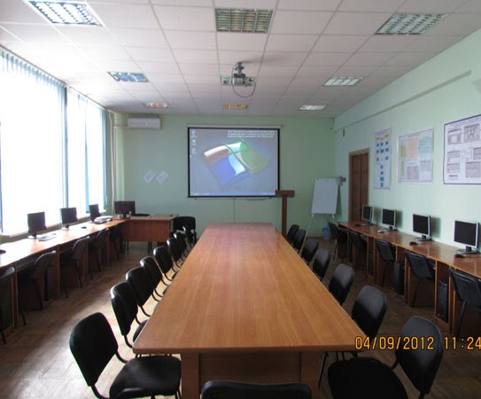

Головна
Кафедра
Абітурієнту
Спеціальності
Матеріально-технічна база
EN
UA
Кафедра фінансів, обліку і аудиту має два сучасних мультимедійних комп’ютерних класи (ауд.244, ауд.236.)

Паспорт мультимедійного класу 244
Паспорт мультимедійного класу 236
Програмне забезпечення
Для підтримки навчальних дисциплін кафедри на всіх комп’ютерах встановлено сучасне програмне забезпечення провідних світових фірм, зокрема:
Відеопрезентація МТБ
M.E.Doc
1c Бухгалтерія 8.3
"IS-pro"
1. Меморандум про співпрацю з "Спілкою Автоматизаторів Бізнесу"
2. Заявка на інформаційно-технічне супроводження "1 С- Бухгалтерія"
3. Угода про сертифікацію учнів вищих і середніх закладів за програмою "1 С: Професіонал"
4. Методичні матеріали по роботі в "1 С: Підприємство 8" з ліцензією